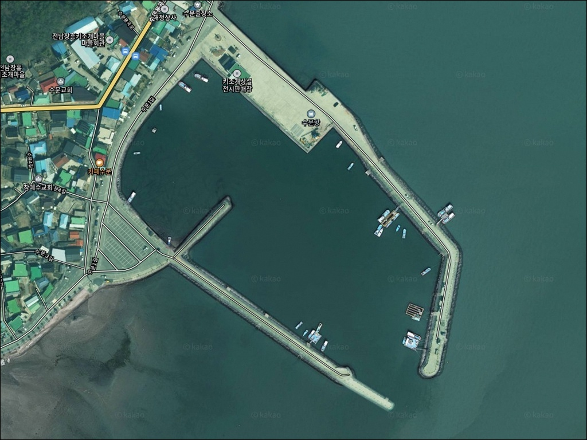
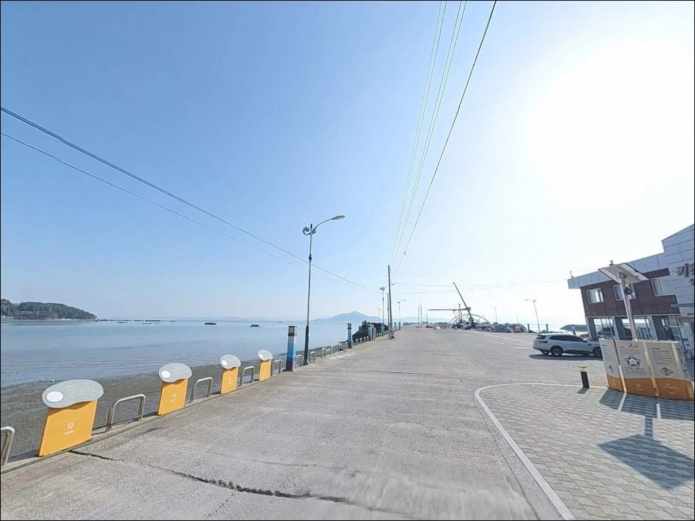
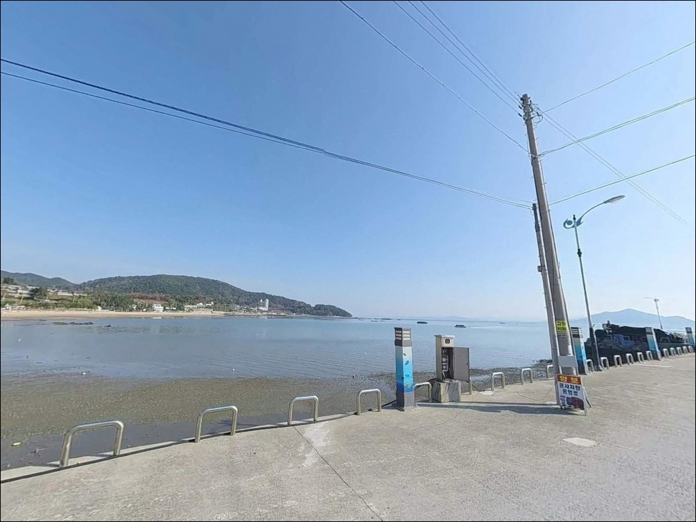
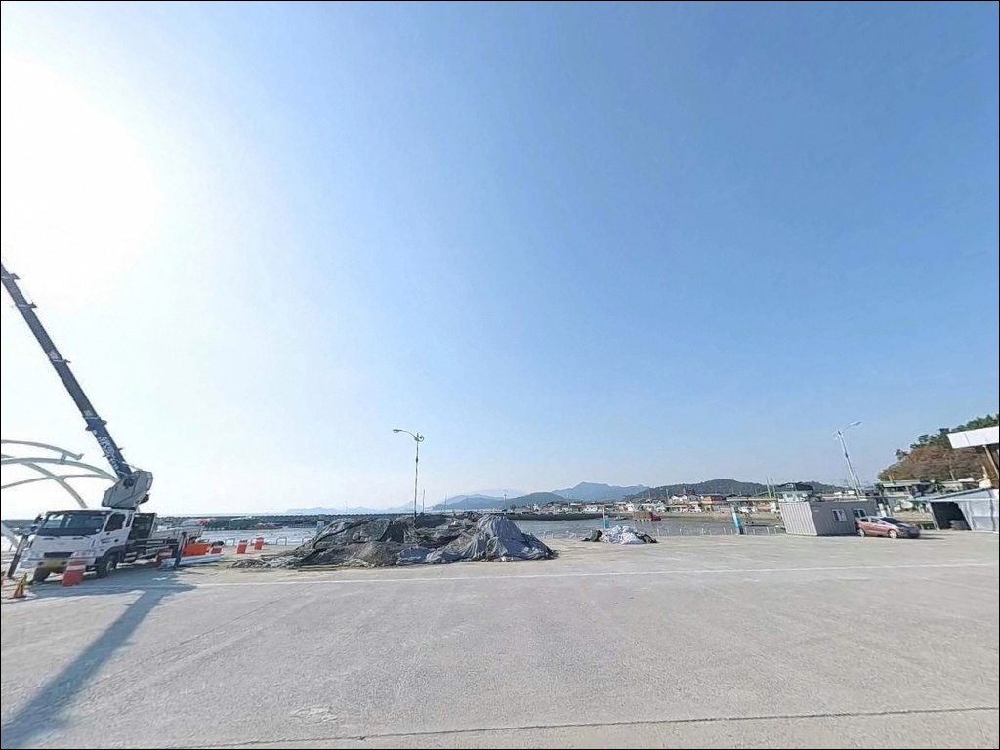
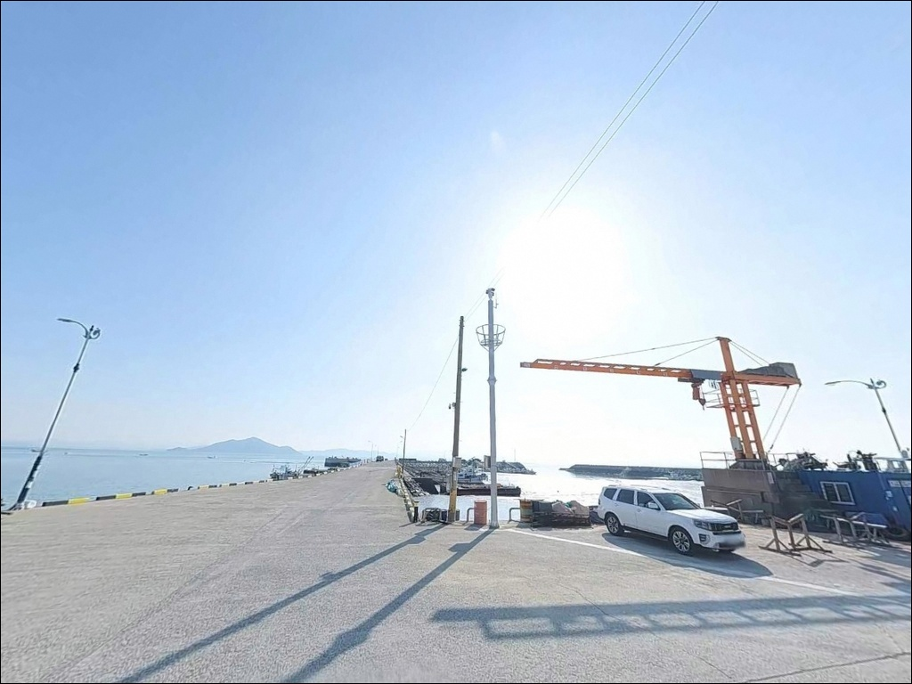
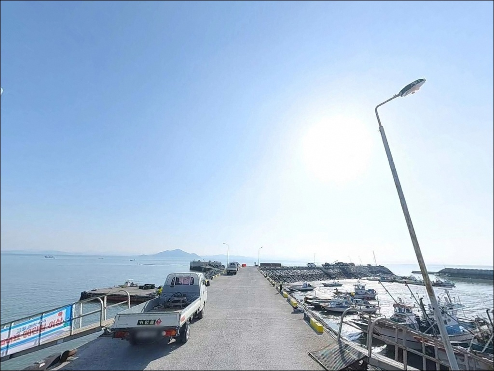
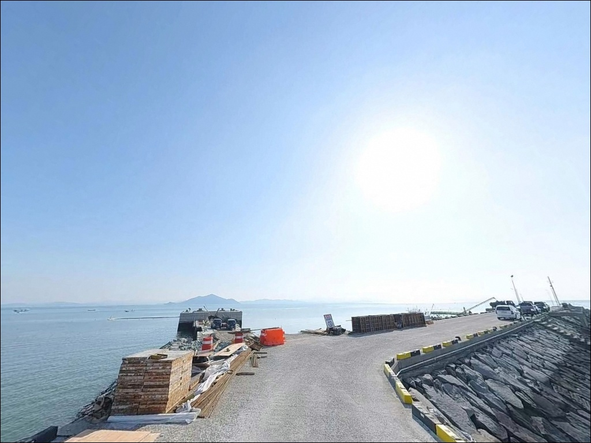
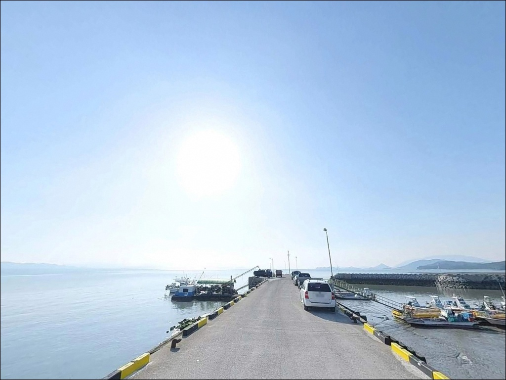
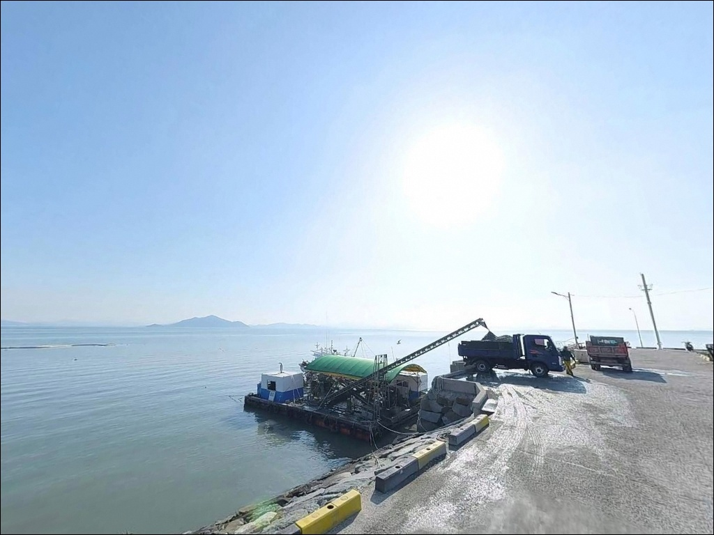

수문항, 전남 장흥군 바닷가 정취 가득한 차박 낚시 스팟 명당
이 페이지에는 광고(제휴 링크 포함)가 있으며, 광고 링크를 통해 구매하면 운영자가 판매 수익 또는 수수료를 받을 수 있습니다. 포인트 사진: 카카오맵 스카이뷰·로드뷰. 이 페이지의 지도·사진 이미지는 카카오맵의 실제 서비스 이미지와 다를 수 있습니다.


포인트 안내
수문항
전남 장흥군 안양면 수문리 151-42
내항 간조 시 바닥이 드러나는 구조라는 사실을
모르고 찾아오면 낚시 자리를 잡기도 전에
헛걸음이 됩니다.
수문항은 득량만 내만 어항 특성상
조류 흐름이 완만하고 수심 변화가 뚜렷해,
물때 타이밍이 조과를 결정하는 핵심 변수입니다.
전남 장흥군 안양면 수문리에 자리한 수문항은
득량만 중서부 서안을 끼고 있는
지방어항입니다.
방파제 581m, 선착장 242m 규모로
어항 구조가 명확하게 갖춰져 있으며,
키조개 마을로 알려진 어촌체험 거점이기도 합니다.
이 글은
수문항의 방파제 구조와 낚시 여건,
진입·주차·차박 조건, 방문 전 판단 기준에 집중합니다.
조황 단정이나 특정 어종 보장은
이 글의 범위에 포함되지 않습니다.

1. 진입 동선과 포인트 접근성
수문항은 국도 18호선 방향에서 포장도로로
직선 접근이 가능한 구조입니다.
항구 규모에 맞게 진입로 폭이 충분하고
항 내부 도로와 광장형 공터에서
대형 SUV, 캠핑카, 카라반도 회차가 가능한
수준입니다.
방파제 초입까지 차량 진입이 원활하며,
전 구간 포장도로로 교행도 가능합니다.
다만 5월 키조개 축제 기간 등 성수기에는
차량 통행량이 크게 늘어
주차 진입 시간대를 사전에 판단하는 것이
효율적입니다.
주차는 수문해수욕장 공용 주차장이
가장 안정적인 선택지입니다.
500면 규모의 무료 주차장이 운영되며
방파제까지 도보 접근이 가능합니다.
항구 전용 공터와 방파제 초입 노상 구간도
추가 주차 공간으로 활용됩니다.

2. 차박 환경과 야간 체류 여건
수문해수욕장 주차장이 차박 거점으로
가장 활용도가 높습니다.
해수욕장 비수기에는 차량 통행이 드물고
민가와 적당한 거리가 유지되어
프라이버시 확보에 유리한 환경입니다.
항구 내에는 가로등과 생활 조명이
일정 수준 갖춰져 있어
야간 이동에 큰 불편은 없습니다.
방파제 구간은 별도 조명이 제한적이므로
낚시 시 헤드랜턴은 반드시 지참해야 합니다.
항 인근에 민가와 상가가 혼재해 있어
성수기에는 주변 소음이 발생할 수 있습니다.
조용한 야간 체류를 원한다면
해수욕장 주차장의 외곽 구간이
상대적으로 안정적인 자리입니다.


3. 주변 편의시설 및 인프라 현황
수문항은 편의시설 접근성이 좋은 편입니다.
항구 인근 수문용곡로를 따라
키조개·해산물 전문 식당이 여러 곳 운영되고 있으며,
도보권에서 식사 해결이 가능한 구조입니다.
화장실은 수문해수욕장 입구 인근에
공중화장실이 위치해 있습니다.
편의점과 소형 상권은
안양면 소재지 방향으로 이동 시 접근 가능합니다.
주유소와 대형 마트, 병원·약국은
장흥읍 방면으로 이동해야 이용할 수 있습니다.
응급 상황이나 낚시 소품 보충이 필요하다면
장흥읍내가 약 15km 거리로
차량 15분 안에 닿습니다.
부족한 채비와 식수는 출발 전에 준비해두는 편이
현장에서 불필요한 이동을 줄입니다.

4. 물때를 모르면 내항은 바닥이 드러납니다 — 방문 전 확인 기준
수문항 방문에서 가장 먼저 확인할 것은
물때입니다.
내항은 간조 시 바닥이 드러나는 구간이 있어
만조 전후 시간대에 맞추지 않으면
낚시 자체가 불가능해집니다.
바다타임에서 장흥 수문항 기준 물때를 확인하고
만조 전후 2~3시간을 핵심 타이밍으로 잡는 것이
기본 전략입니다.
득량만 내만 특성상 외해 파도의 영향은
비교적 제한적이지만,
계절풍이 강한 시기에는 방파제 외항에서
파고가 급변하는 경우가 있습니다.
출발 당일 기상청 해양예보를 한 번 더 확인하는 것이
안전한 준비입니다.
수문항은 키조개 어장 갯벌과 인접해 있습니다.
방파제 주변 갯벌로 내려가거나
어민 작업 구역에 접근하면
사유 어장과 겹칠 수 있으므로
낚시 자리는 방파제와 선착장 외측으로 한정하는 것이
매너이자 기본 수칙입니다.

5. 지형 기반 낚시 여건 분석
수문항의 지형은 크게 두 구역으로 나뉩니다.
방파제 외항 측은 테트라포드가 포설된 구간으로
끝단으로 갈수록 수심이 깊어져
방파제 중간 이후부터 5~7m 수준이 형성됩니다.
내항은 2~4m의 완만한 수심으로
간조 시 바닥 드러남이 발생하는 구간이 있습니다.
득량만은 장흥·보성·고흥 세 방향으로 둘러싸인
반폐쇄형 내만으로,
조류 흐름이 비교적 완만하고 수온이 안정적입니다.
이 구조 덕분에 저서성 어종의 서식 환경이
잘 갖춰져 있으며,
수문천 담수가 유입되는 기수 환경이
다양한 어종 기대를 뒷받침합니다.
방파제 끝단과 꺾임 구간은
수심 변화와 조류 흐름이 동시에 발생하는
가장 활성도 높은 구간입니다.
득량만 갯벌 일대는 낙지와 갑오징어의
주요 서식 해역으로 알려져 있어,
두족류를 노리는 낚시 방식이
이 해역 패턴과 잘 부합합니다.
출조 전 최신 조황은 "수문항 낚시", "득량만 조황"으로
꼭 검색해 보시기 바랍니다.


6. 포인트에 어울리는 낚시 스타일
수문항에서 가장 기본이 되는 낚시는 원투낚시입니다.
방파제 중간~끝단에서 외항 방향으로
채비를 투척하면 모래와 뻘이 섞인 바닥에서
저서성 어종을 노릴 수 있습니다.
방파제 끝단이 수심 변화가 가장 큰 핵심 자리입니다.
에깅(갑오징어) 낚시도 이 해역에 잘 맞는 방식입니다.
득량만 내만 전역이 갑오징어 서식 조건에
해당하는 해역으로, 봄과 가을 두족류
활성 시기에 방파제 외항 수로 라인을 중심으로
에기를 운용하는 방식이 유효합니다.
릴찌낚시는 방파제 외항에서 조류가 흐를 때
중층 회유어와 감성돔을 노리는
방식으로 성립합니다.
내항 선착장 주변에서는 민장대나
지그헤드·웜 계열 생활 루어로
가벼운 생활낚시를 즐기기에도 무리 없는 구조입니다.

7. 대안 포인트와 플랜 B 동선
수문항 조류가 너무 약하거나
혼잡도가 높을 때
가장 먼저 이동할 수 있는 대안은
장재도 인근 석축 포인트입니다.
차량으로 10분 거리로 가깝고
수심 변화와 지형 구성이 수문항과 달라
다양한 낚시 스타일 운용이 가능합니다.
득량도 선착장과 율포방파제도
반경 10km 이내에 있는 대안 포인트입니다.
득량도 선착장은 수문항 대비
조류 흐름이 더 강한 구간으로
루어낚시 공략에 유리한 조건입니다.
차박 거점이 수문항에서 혼잡할 경우
사촌리 선착장 방면의 한적한 구간이나
동일 해안선을 따라 더 조용한
소형 포구 주변을 탐색하는 것이
대안 동선으로 활용됩니다.
낚시와 식사는 수문항으로 돌아오는
분산 체류 방식이 효율적입니다.

물때와 지형을 알면
수문항이 다르게 보입니다
원투낚시나 갑오징어 에깅을 즐기는 낚시인이라면
수문항의 방파제 구조와 득량만 해역 조건이
잘 맞는 편입니다.
581m 방파제를 따라 자리 선택의 폭이 넓고,
내항과 외항의 지형 차이가 뚜렷해
낚시 방식에 따라 자리를 나눠 운용하기
좋은 구조입니다.
반면 물때 확인 없이 내항에 진입하거나,
성수기 혼잡 시간대에 무작정 방문하면
주차 자리를 찾다 지치거나
낚시 자리를 잡지 못하는 상황이 됩니다.
물때 확인, 성수기 도착 시간 조정, 채비 여분 준비,
이 세 가지를 갖추고 간다면
인프라까지 갖춰진 안정적인 출조가 됩니다.
수문해수욕장 주차장을 베이스로
방파제 낚시를 마치고 인근 식당에서
키조개 한 상을 즐기는 일정이라면,
낚시와 차박 모두 무리 없이
엮을 수 있는 포인트입니다.